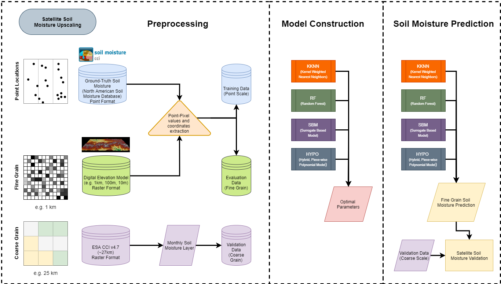

@inproceedings{rorabaugh2019somospie,
title={SOMOSPIE: A modular SOil MOisture SPatial Inference Engine based on data-driven decisions},
author={Rorabaugh, Danny and Guevara, Mario and Llamas, Ricardo and Kitson, Joy and Vargas, Rodrigo and Taufer, Michela},
booktitle={2019 15th International Conference on eScience (eScience)},
pages={1--10},
year={2019},
organization={IEEE}
}
@article{llamas2020spatial,
title={Spatial gap-filling of ESA CCI satellite-derived soil moisture based on geostatistical techniques and multiple regression},
author={Llamas, Ricardo M and Guevara, Mario and Rorabaugh, Danny and Taufer, Michela and Vargas, Rodrigo},
journal={Remote Sensing},
volume={12},
number={4},
pages={665},
year={2020},
publisher={Multidisciplinary Digital Publishing Institute}
}
@inproceedings{kitson2017data,
title={Data analytics for modeling soil moisture patterns across united states ecoclimatic domains},
author={Kitson, Thomas and Olaya, Paula and Racca, Elizabeth and Wyatt, Michael R and Guevara, Mario and Vargas, Rodrigo and Taufer, Michela}
,
booktitle={2017 IEEE International Conference on Big Data (Big Data)},
pages={4768--4770},
year={2017},
organization={IEEE}
}
@inproceedings{mckinney2015hpc,
title={From HPC performance to climate modeling: Transforming methods for HPC predictions into models of extreme climate conditions},
author={McKinney, Ryan and Pallipuram, Vivek K and Vargas, Rodrigo and Taufer, Michela},
booktitle={2015 IEEE 11th International Conference on e-Science},
pages={108--117},
year={2015},
organization={IEEE}
}
@article{stell2019soil,
title={Soil swelling potential across Colorado: A digital soil mapping assessment},
author={Stell, Emma and Guevara, Mario and Vargas, Rodrigo},
journal={Landscape and Urban Planning},
volume={190},
pages={103599},
year={2019},
publisher={Elsevier}
}
@article{guevara2019downscaling,
title={Downscaling satellite soil moisture using geomorphometry and machine learning},
author={Guevara, Mario and Vargas, Rodrigo},
journal={PloS one},
volume={14},
number={9},
pages={e0219639},
year={2019},
publisher={Public Library of Science San Francisco, CA USA}
}
@inproceedings{kitson2017data,
title={Data analytics for modeling soil moisture patterns across united states ecoclimatic domains},
author={Kitson, Thomas and Olaya, Paula and Racca, Elizabeth and Wyatt, Michael R and Guevara, Mario and Vargas, Rodrigo and Taufer, Michela},
booktitle={2017 IEEE International Conference on Big Data (Big Data)},
pages={4768--4770},
year={2017},
organization={IEEE}
}
@article{warner2019upscaling,
title={Upscaling soil-atmosphere CO2 and CH4 fluxes across a topographically complex forested landscape},
author={Warner, Daniel L and Guevara, Mario and Inamdar, Shreeram and Vargas, Rodrigo},
journal={Agricultural and forest meteorology},
volume={264},
pages={80--91},
year={2019},
publisher={Elsevier}
}

Professor, University of Tennessee Knoxville

Professor, University of Delaware

Professor, University of Tennessee Knoxville

Postdoctoral Researcher, University of Tennessee Knoxville
Undergraduate Student, University of Tennessee Knoxville

Graduate Student, University of Delaware

Graduate Student, University of Tennessee Knoxville

Doctoral Student, University of Tennessee Knoxville

Collaborator

Postdoctoral Researcher, University of Tennessee Knoxville

Doctoral Student (2020), University of Tennessee Knoxville

Undergraduate Student, University of Tennessee Knoxville